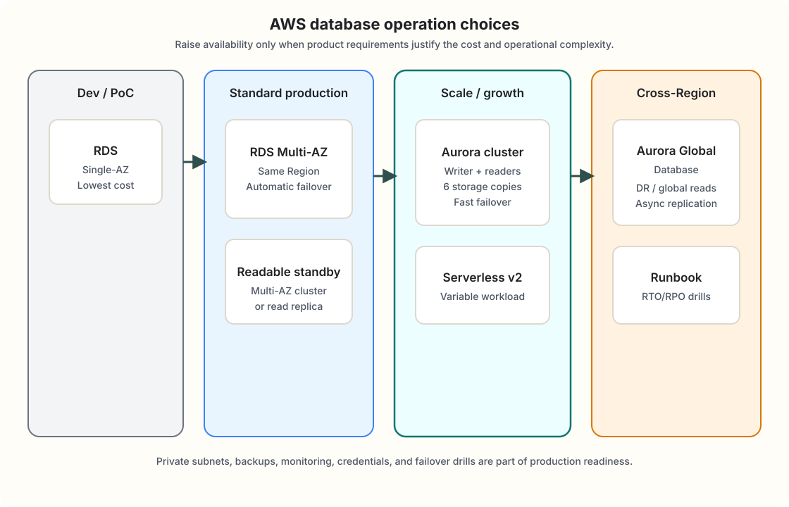

AWS / RDS / Aurora / 運用設計
AWSデータベースのプロダクト運用トレンドと冗長化の長短
2026年5月時点の実務では、「RDSを1台立てる」だけでは本番の標準にならず、同一リージョン内のMulti-AZ、必要に応じたAurora、リージョン横断は要件がはっきりしたときだけ、という段階設計が主流です。コスト・可用性・運用負荷・移行しやすさを、企業プロダクトの規模別に整理します。
簡潔なQ&A
- Q. いまプロダクト運用で「普通」に選ばれる構成は？
- A. 本番は同一リージョンのMulti-AZ（RDSまたはAurora）を前提にし、接続はRDS Proxyやアプリ側プール、バックアップ・監視・秘密情報ローテーションをセットで入れる。開発・検証だけSingle-AZ。リージョン跨ぎはDR要件やグローバル読取が明確なときにAurora Global Databaseなどを検討する。
- Q. RDSシングル（Single-AZ）とMulti-AZの差は？
- A. Single-AZはコスト最小だがAZ障害で長時間止まる。Multi-AZ DBインスタンスは別AZのスタンバイへ同期レプリケーションし自動フェイルオーバーするため、AZ単位の障害に耐える。本番の「標準」はMulti-AZ側。
- Q. AuroraはいつRDSより有利？
- A. 読み取りが多い、ストレージ成長が読めない、フェイルオーバーを短くしたい、クラスタ単位でReaderを増やしたい、または変動負荷にAurora Serverless v2を合わせたいとき。小規模で負荷が平坦ならRDS Multi-AZのままでも十分なことが多い。
- Q. リージョンを跨ぐ冗長化は「常にやるべき」？
- A. いいえ。コスト・複雑さ・整合性モデル（多くは非同期）のトレードオフが大きい。RTO/RPO、規制、ユーザー分布が理由になって初めて採用するのが一般的。

いまの運用トレンド（プロダクト視点）
企業のWebプロダクト（SaaS、業務システム、ECなど規模は問わない）では、次の方針がよく見られます。
- 本番のデフォルトは高可用性構成：Single-AZは開発・検証・一時環境向け。本番DBはMulti-AZ DBインスタンス、Multi-AZ DBクラスタ、またはAuroraクラスタ（複数AZ）が前提。
- マネージドのまま運用負荷を下げる：OSパッチやストレージ拡張の一部をAWSに任せ、チームはスキーマ変更・性能・バックアップ検証・アクセス制御に集中する。
- 接続層の分離：RDS Proxyで接続プールとフェイルオーバー時の接続維持を改善するケースが増えている（Lambdaやコンテナのスパイク接続にも有効）。
- 可観測性の標準装備：Performance Insights、Enhanced Monitoring、CloudWatchアラーム、スロークエリログ、レプリケーション遅延の監視を本番セットに含める。
- コスト最適化は「構成の見直し」から：Reserved Instances、Savings Plans、インスタンスサイズ適正化、dev/stagingのSingle-AZ化、不要なReader削減。エンジン延長サポート料金の回避（バージョンアップ）も優先度が高い。
- IaCと変更手順の定型化：Terraform / CloudFormation / CDKで構成をコード化し、メンテナンスウィンドウ・Blue/Green Deployments（対応エンジン）でエンジン更新やパラメータ変更のリスクを下げる。
- Serverlessは万能ではなく変動負荷向け：Aurora Serverless v2はACUの範囲で細かくスケールし、対応バージョンでは0 ACUまで縮退できる。一方、最小ACU、接続数、バッファキャッシュ、Global Database利用時の下限などを設計する必要がある。
- リージョン跨ぎは要件駆動：「とりあえず二重化」ではなく、DR（災害復旧）、近接リード、規制上のデータ所在地など明確な理由があるときだけ。
選択肢の比較（コスト・可用性・運用）
| 構成 | 可用性のイメージ | コスト | 運用・複雑さ | 向いている場面 |
|---|---|---|---|---|
| RDS Single-AZ | AZ障害で停止しやすい。計画メンテは停止または短い影響。 | 最安（インスタンス1台分＋ストレージ） | 最も単純 | 開発・検証、非クリティカル、コスト最優先のPoC |
| RDS Multi-AZ（スタンバイ） | 同一リージョン内のAZ障害に耐える。自動フェイルオーバー（おおむね数分以内のイメージ）。 | スタンバイ分のDBインスタンス、ストレージ、同期複製に応じて増える | 低〜中。AWSがフェイルオーバーを面倒見る | 中小〜中規模の本番MySQL/PostgreSQLなどの標準解 |
| RDS Multi-AZ DBクラスタ | スタンバイが読み取り可能。フェイルオーバーがより短い場合がある。 | 3台構成なので標準Multi-AZより高め | 中。読み取り経路の設計が必要 | 同一リージョンで読みも足したいがAuroraまで行かない場合 |
| Read Replica（同一リージョン） | プライマリ障害時は自動昇格しない（別途フェイルオーバー設計が必要）。 | レプリカ分のインスタンス＋転送 | 中。遅延・ルーティングをアプリで扱う | レポート、分析、読み取り負荷分散（HAの代替ではない） |
| Amazon Aurora（クラスタ） | ストレージが6コピー（3 AZ）。Writer障害時はReader昇格で短い切替がしやすい。 | 小規模ではRDSより高く見えやすいが、I/OやReader構成次第で妥当化しやすい | 中。Aurora固有の運用知識が必要 | 成長見込みが大きい、読み取り多、フェイルオーバー短縮、PostgreSQL/MySQL互換で新規構築 |
| Aurora Serverless v2 | クラスタと同系。負荷に応じてACUスケール。 | 変動負荷向け。常時高負荷ならProvisionedの方が読みやすいことがある | 中。最小/最大ACU、接続数、スケール速度を決める必要がある | 昼夜差・季節差が大きい、スパイクがあるが常時大きいインスタンスは無駄 |
| クロスリージョン Read Replica / 手動DR | リージョン障害時に別リージョンへ切替（RPOはレプリケーション遅延分）。 | レプリカ＋ネットワーク＋切替運用コスト | 高。DNS・接続先・データ整合の手順が必要 | RDSのままDRだけ欲しい、グローバル書き込みは不要 |
| Aurora Global Database | プライマリリージョン＋読み取り専用セカンダリ（複数リージョン）。典型的なレプリケーション遅延は1秒未満級だがグローバル強整合ではない。 | 高（各リージョンのクラスタ＋レプリケーション） | 高。DR訓練、昇格手順、読み取りルーティングが必要 | リージョン障害へのDR、海外ユーザー向けローカルリード |
規模別の現実的な選び方
小規模プロダクト（初期〜数十万ユーザー級の目安）
まずはRDS Multi-AZ（PostgreSQLまたはMySQL）で十分なことが多いです。VPC内Private Subnet、Security Group、自動バックアップ（保持期間はビジネス要件で7〜35日など）、PITR有効化がセット。読み取りがボトルネックになってからRead Replicaを足す、という順序がコスト効率がよいです。
中規模（読み取り・書き込みともに伸びる）
新規ならAuroraを検討するタイミングが増えます。Readerを水平に足しやすく、ストレージの上限を意識しにくい点がメリット。アプリはReaderエンドポイント（読み取り専用）とWriterエンドポイントを分ける設計にします。接続数が増えるならRDS Proxyを挟みます。
大規模・グローバル
同一リージョン内はAuroraクラスタ＋複数Reader＋Proxyが基本形になりやすいです。リージョン跨ぎはAurora Global DatabaseでDRとグローバルリードを担うパターンが定番ですが、「両リージョンで同時に書き込みたい」「どこから読んでも強整合」といった要件は別問題です。2026年時点ではAurora DSQLのような分散SQLがそのニッチを狙う選択肢として登場していますが、既存RDS/Auroraの置き換えではなく、制約を満たす新規システムで慎重に検証する位置づけです。
リージョン跨ぎで押さえる誤解
- Multi-AZ ≠ リージョン冗長：Multi-AZは同一リージョン内のAZ分散。リージョン全体の障害には効かない。
- Read ReplicaはHAではない：読み取りスケール用。プライマリ障害時の自動切替はMulti-AZやAuroraのフェイルオーバー機構と役割が違う。
- Multi-AZ DBクラスタはAuroraではない：RDSの3台構成で、2台のReaderをフェイルオーバー先兼読み取り先にできる。Auroraクラスタとはストレージ構造も運用特性も違う。
- Global Databaseはアクティブ・アクティブ書き込みではない：書き込みは基本プライマリリージョン集中。セカンダリは読み取りとDR向け。Write forwardingを使っても、書き込みはプライマリへ転送される設計。
- RPO/RTOを先に決める：「二重化した」だけでは復旧時間とデータ損失許容が定まらない。バックアップ復元だけのDRと、Global Database＋昇格手順のDRでは到達点が違う。
コストを抑える実務テクニック
- 本番だけMulti-AZ。staging/devはSingle-AZ（データはマスキングまたは縮小）。
- 安定稼働が見えたらReserved InstancesやSavings Plans。Single-AZ用とMulti-AZ用は別購入で、デプロイ種別を間違えると割引が効かない。
- Performance Insightsで過剰スペックを削る。I/O最適化ストレージやAuroraの料金体系はワークロード依存。
- 古いメジャーバージョンのRDS Extended Support料金はMulti-AZのスタンバイにも適用される。アップグレード計画をRI購入より先に。
- リージョン跨ぎは常時二重本番にせず、DR時のみスケールする設計（セカンダリを小さく保つ等）も検討対象。
可用性を上げるときの「セット商品」
DBエンジンだけMulti-AZにしても、アプリが接続し直せない・バックアップを復元したことがない、では運用品質は上がりません。プロダクト運用レベルでは次をまとめて設計します。
- 自動バックアップ＋スナップショット＋定期的なリストア訓練
- メンテナンスウィンドウと変更管理（Blue/Green Deployments、マイグレーション手順）
- Secrets Manager等での認証情報ローテーション
- 暗号化（保存時・転送時）、最小権限のDBユーザ、監査ログ
- フェイルオーバー時の接続（Proxy、DNS TTL、リトライ設計）
- 関連ネットワーク構成（Web/DB分離のVPC設計）
意思決定の早見表
| 状況 | 第一候補 |
|---|---|
| 新規本番、PostgreSQL/MySQL、まず安定させたい | RDS Multi-AZ |
| 読み取り負荷が先にボトルネック | Read Replica または Aurora Reader |
| フェイルオーバー短縮・ストレージ成長・Reader追加が頻繁 | Aurora クラスタ |
| 負荷が大きく変動（夜間アイドルなど） | Aurora Serverless v2 を検討 |
| リージョン障害でも数分〜数十分で復旧したい | Aurora Global Database ＋ DR手順書 |
| コスト最優先・障害許容 | Single-AZ ＋ バックアップからの復旧（本番非推奨が多い） |
要点
2020年代後半のプロダクト運用では、本番の「標準」は同一リージョンのMulti-AZ（RDSまたはAurora）です。Single-AZは開発向け、リージョン跨ぎはDRやグローバルリードの要件があるときだけ、と段階を踏むのがコストと複雑さのバランスがよいです。Auroraは可用性・読み取り拡張・運用のしやすさで有利になりやすい一方、小規模・平坦負荷ならRDS Multi-AZのままで十分なケースも多いです。最後に、構成だけでなくバックアップ検証・接続の切替・監視・バージョン管理をセットにして初めて「運用レベル」になります。